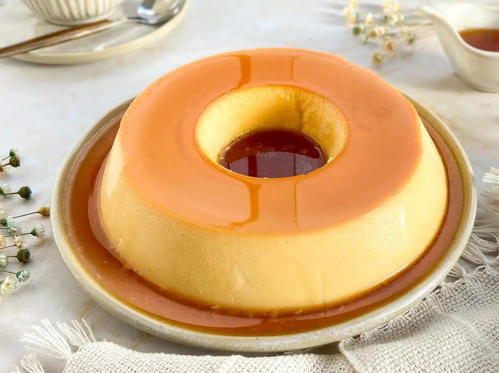

Home
Pudim

Porções: 6 a 8
Tempo de preparo: 75min
Você só precisa de 3 ingredientes para fazer o pudim de leite condensado. No liquidificador, o preparo é vapt-vupt! Atenção ao ponto da calda - isso ajuda muito na hora de desenformar. Siga o passo a passo certinho e a pudim vai cozinhar bonito de ver e gostoso de comer.
Ingredientes
Calda
- 1 xícara de chá de açúcar (200 gramas)
- 1/2 xícara de chá de água quente (120 ml)
Pudim
- 3 ovos médios
- 320 ml de leite integral
- 1 lata de leite condensado (395 gramas)
Modo de preparo
- Veja se tem todos os ingredientes e se prepare para fazer o melhor pudim de leite condensado, que fica lisinho e sem furinhos;
- Para fazer a calda, escolha uma panela de fundo grosso e coloque o açúcar. Ligue o fogo baixo e derreta até não restar quase nenhum cristal;
- Cuidadosamente, coloque a água quente na panela e misture vigorosamente para derreter os cristais de açúcar novamente ou até os torrões de açúcar se desmancharem e formar a calda em ponto de xarope;
- Despeje a calda em uma forma de pudim com 19 cm de diâmetro e espalhe para cobrir o fundo e as laterais. Reserve enquanto prepara o pudim;
- Quebre um ovo de cada vez em um pote separado e, se ele estiver bom, adicione no liquidificador. Junte o leite, o leite condensado e bata por aproximadamente 1 minuto até a mistura ficar completamente homogênea;
- Coloque uma peneira em cima da forma com a calda e despeje a mistura de pudim. Isso ajudará na remoção das bolhas e qualquer outro pedacinho de ingredientes que não foram batidos no liquidificador, deixando ele ainda mais lisinho;
- Cubra com papel-alumínio e leve ao forno preaquecido a 180ºC por aproximadamente 45 minutos em banho-maria. Basta colocar a forma de pudim em uma assadeira retangular com bordas altas com água;
- Depois, retire do forno, aguarde o pudim amornar e leve para a geladeira por pelo menos 2 horas, ou até ficar firme;
- Passe a faca no meio e nas laterais da forma para desgrudar o pudim. Se necessário, leve a forma na boca do fogão para derreter rapidamente o caramelo e o pudim desenformar facilmente. Desforme em um prato grande ou boleira. Sirva e bom apetite!